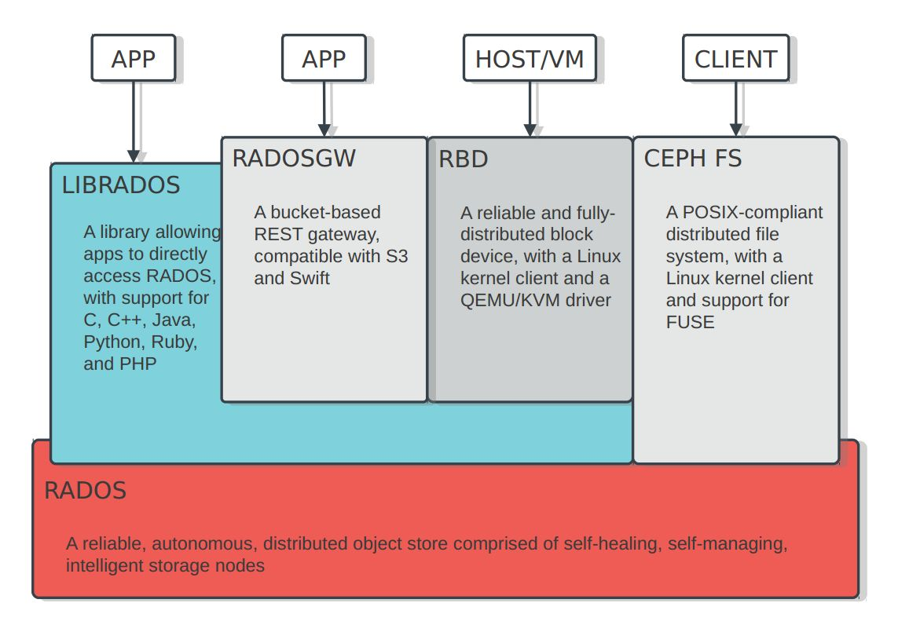

浅谈Ceph(转载)
关于Ceph的性能
以笔者个人的经验而言，探讨一个系统领域的开源项目的性能，事实上并不容易。其原因在于，影响一个实际部署中系统的性能好坏的因素太多、太复杂。硬件配置、 软件版本、参数调整、应用负载及场景设置，各个方面的因素变化都会导致性能测试结果的不同。因此，很难一言蔽之，认为某个项目的性能是好还是不好。
举一个不直接相关的例子。在hypervisor领域，大家很可能会倾向于认为ESXi的性能优于KVM，但事实上，在SPECvirt性能测试结果排行榜 上，基于KVM的系统常有高居第一的时候。究其原因，除了硬件性能的因素之外，KVM有大量的配置参数可以调整，而调得好与不好会极其明显地影响系统性能。
又比如常用的开源大数据工具软件Hadoop。同一个Hadoop集群用同样的应用程序处理同样的数据集，在配置参数不同的情况下，其最终运行时间长度可能相差数倍。
正是因为参数配置、硬件规格、软件版本、应用场景等因素都可能对性能产生明显影响，因此，对于Ceph这样一个部署方案多变、配置参数不少的系统，如何评测其系统性能，是需要审慎思考的。
反过来讲，这倒也是开源软件引出的一个生财之道。虽然软件本身是开源的，大家都可以免费下载免费安装，但能不能用好就要依靠精深的专业技能了。类似的公司国外屡见不鲜，而国内也已经开始出现。
Ceph的架构与硬件平台之间的适应性
Ceph自2006年正式发布以来，其基础架构（RADOS）部分并没有发生大的变化。本质上，这还是因为RADOS的设计确实优秀，有其前瞻性，因此没有必要大动筋骨。但这并不意味着没有必要对其进行适当反思。
如前所述，2006年的时候，商用处理器的主流仍为单核，单条内存和单块硬盘的容量也都远小于现在的主流水平。但是，OSD的基本硬件资源要求并没有发生变 化。这也就意味着，在目前的典型部署方案中，一台物理服务器上很可能有数十个处理器硬件线程、数十块硬盘，于是也就承载着数十个OSD同时运行。然 而，RADOS结构的基本假定是，集群是由大量的、相互独立运行的OSD组成的，则目前的典型硬件方案有可能影响这种假定的有效性。例如，如果一台服务器 出现故障，必须关机进行维修，则意味着数十个OSD一起突然下线。由此受到影响的PG则可能多达成千上万个。这种突发性的事件对系统的自动化维护机制可能 会造成一定的压力。
由此，笔者想到，Sage设计Ceph时面对的硬件平台，事实上应该是处理能力不需要过强、硬件规格比较简单的系统。而这种系统可能与目前的ARM架构或者 Intel Atom架构的micro-server更为相似。或许，基于micro-server部署Ceph集群，会是一种值得尝试的方向。
此外，华为和希捷合作推出了IP硬盘产品。虽然还缺乏更进一步的了解，但直观上推测，这种全新的、轻量级、智能化的存储设备，可能也是一种非常近似于Sage当年设想中的OSD的硬件平台。
Ceph与软件定义存储
“软件定义”这四个字可谓是目前最炙手可热、也最让人糊涂的概念之一。软件定义计算、软件定义网络、软件定义存储、软件定义数据中心，以上几个可能是目前最为常见的相关名词了。
到底什么是“软件定义”，现在还没有形成完全一致的见解。并且，参考技术发展史上的若干先例，以后也未必能形成所谓的一致见解。在这种情况下，以一个具体实例入手，可能更容易获得直观认识，并由此建立起更系统的观点。
笔者认为，对于任何一个系统而言，“软件定义”的概念，更多体现在这里：这个系统的哪些特性，比如功能或者性能，以前是固定的，或者只能进行有限的配置，而现在则可以进行方便灵活地定义和改变。
例如，对于一台物理服务器，一旦其硬件配置，如CPU、内存、硬盘等连接好，则这台服务器的规格和性能就确定了，能够通过BIOS配置等方式调整的性能和功 能范围是很有限的。但是，对于一台虚拟机而言，即便在虚拟机已经创建并安装了操作系统之后，其CPU核数及处理能力、逻辑物理内存大小及真实物理内存大 小、硬盘数量容量及读写性能、网卡型号数量及网络带宽等等特性都是可以方便灵活地通过软件方式进行控制和改变的（其中部分配置操作需要对虚拟机进行重启才 能生效），且这种配置可以由应用层软件进行控制。两相对比，则虚拟机的这种可定义性就是软件定义计算的一个直观实例。
下面再具体到存储领域加以讨论。一般而言，一个存储系统的主要特性大致包括：存储类型（文件系统？块存储？对象存储？），存储容量，存储性能（访问带宽、访 问延迟等等），存储策略（备份策略、访问安全性策略、对数据的高级处理功能等等）。参考上面所举出的软件定义计算的例子，可以想见，对于一个软件定义存储 系统而言，这些特性（至少是其中的大多数）都应该是可以通过软件方式加以定义的。
具体到Ceph而言，其最为符合软件定义存储的特性无疑是，Ceph的存储类型是可以通过软件方式定义的。同样的一个RADOS集群，可以通过安装不同的上 层软件和对应的客户端程序，实现块存储、对象存储和文件系统存储功能，这一特性对于传统的存储系统难以想象。除此之外，Ceph的存储策略，如备份策略、 后台数据处理功能等，也都可以方便地通过软件方式加以定义或扩展。因此，从这个角度出发，Ceph也可以被认为是软件定义存储的真实案例之一。
Ceph与数据中心计算
传统意义上，计算系统的设计是以计算为中心的。数据从存储、网络或其他设备流入处理器，经过处理后再流向存储、网络或其他设备。然而，随着待处理的数据量以 爆炸式的速度增大，也随着计算能力提高的速度超过存储和传输能力，这一处理方式可能变得不再经济，因为针对大量的数据进行频繁硬盘存取和网络传输的代价都 是非常可观的。
数据中心计算这一概念，也就是在这种背景下被提出的。其核心思想，也就是让计算在数据所在的地方发生。数据在哪里，就把计算任务发送到哪里去执行，而不要再 为了使用“强大”的计算能力把数据搬来搬去，传来传去。事实上，Hadoop的出现，就是这种数据中心计算思想的现实反映。
数据中心计算的另一实例，是目前OpenStack社区中出现的一种叫做ZeroVM的轻量级虚拟化技术[1]。ZeroVM的思想就是让计算发生在数据所在的地方。基于其官方提供的信息，目前已经实现了ZeroVM和Swift的整合，可以让处理任务直接运行在Swift的服务器端。数据中心计算的另一实例，是目前OpenStack社区中出现的一种叫做ZeroVM的轻量级虚拟化技术[1]。ZeroVM的思想就是让计算发生在数据所在的地方。基于其官方提供的信息，目前已经实现了ZeroVM和Swift的整合，可以让处理任务直接运行在Swift的服务器端。
事实上，Ceph也提供了同样的能力。Ceph的整个设计，都是基于Sage的一个基本思想：充分发挥存储器件自身的计算能力。这种思想不仅使得OSD可以 相互配合完成数据访问操作和集群维护功能，更允许OSD将富余的计算能力提供出来，用于运行数据处理任务。
目前，RADOS提供的机制允许在OSD上直接运行可动态加载的数据处理程序插件，以便在服务器端进行数据处理工作，例如，对图片存储系统中的图片进行自动 加水印、尺寸和格式自动转换等后台操作。事实上，基于这种能力，也完全可以实现类似于Hadoop的大数据处理系统。
对于大数据而言，存储和处理是其两个关键的技术领域。由于Ceph自身就是优秀的存储系统，又具备直接承载计算任务的能力，因此，面向大数据的数据中心计算很可能是Ceph的潜在应用方向之一。
Ceph在实际应用中可能存在的问题
到目前位置，本系列文章基本上都是在介绍Ceph的各种优势与特长。但是，任何系统都不可能是十全十美的，本着鸡蛋里挑骨头、吹毛求疵的精神，还是要在这里吐槽几句。
从非技术角度出发，Ceph的最大问题是火起来的时间不够长，因此可以参考的文档还不是很多，中文的尤其如此。但这个没有办法，只能众人拾柴火焰高，一点一滴作贡献。
此外，对Ceph诟病最多的可能还是不够成熟云云。但一个开源项目总是用得人多了才会成熟的，而Ceph目前正在这个过程中，所以需要的还是时间和参与。
基于Ceph的产业需求和可能的商业机会
首先，Ceph的安装部署和性能优化必然成为突出的需求。因此，将Ceph和商用服务器整合成易于部署、性能出色的各类存储解决方案，应该是可以考虑的方向之一。
同时，由于Ceph自身对于OSD硬件平台的特殊假设，以及由此导致的优化空间，则在成本合理的前提下，开发更加适用于Ceph OSD的定制硬件平台（类似于micro-server或者IP硬盘等），并突出存储的高密度、低功耗、高可维护性等特点，也可能成为一种选择。
此外，针对Ceph集群的专用集群监控、性能分析等工具软件也可能会有一定的需求。
最后，基于Ceph的后台数据处理软件工具包也值得考虑。